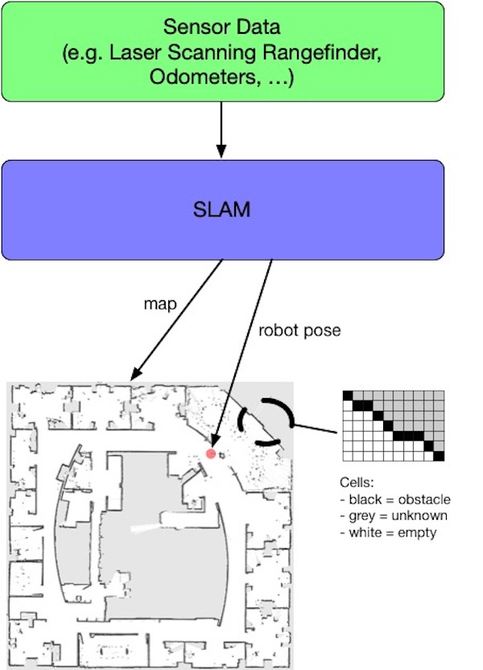

What is SLAM in a Nutshell?
Mobile robots rely heavily on accurate representations of the environment (i.e maps) to fulfill their tasks (autonomous navigation, exploration, ...). Inside buildings, GPS signals are too weak to be used to localize robots. Hence we face a so-called Chicken-and-Egg-Problem, as localization requires a map, and map building (i.e. mapping) requires the current location. One solution consists in doing Simultaneous Localization and Mapping (a.k.a. SLAM) using a SLAM algorithm that typically reaches centimetric precision.
There are many different flavors of SLAM especially regarding the map format. The dominating 2D map format is the occupancy grid, also called grid map. A grid map is a matrix whose cells represents a defined region of the real world; this is the resolution of the grid map (typically a square of 5cm). A cell holds the estimated probability that the space it represents is traversable (free space) or not (obstacle). The simplest format is the 3-state occupancy grid in which a cell has 3 different possible values: 0 (free space), 0.5 (unknown) and 1 (obstacle).

Map building using slam_toolbox
There are a lot of different SLAM algorithms and some implementations are open source and available on OpenSLAM.
We will use here the slam_toolbox ROS implementation (documentation is here).
Launch slam_toolbox
ros2 launch tbot_sim challenge-1.launch
ros2 launch slam_toolbox online_sync_launch.py use_sim_time:=False
rviz2
Question: using all the tools you already know (
rviz2,rqt_graph, tf, ...), what are the input and output data ofslam_toolbox?
Manual Mapping
Launch a teleop:
# keyboard
ros2 run teleop_twist_keyboard teleop_twist_keyboard
# or xbox
ros2 launch teleop_twist_joy teleop-launch.py joy_config:=xbox
Now, while moving the robot around the simulated environment, you should see the result of slam_toolbox (both the map and robot pose) updated in rviz2.

Autonomous Navigation sending goal points
Facultative part
ros2 launch nav2_bringup navigation_launch.py
Be carreful, navigation should publish in the right topic so that the robot receive command velocities.
Then, send goal points into /goal_pose (use rviz2)
Save the Map
ros2 run nav2_map_server map_saver_cli -f /home/bot/map
Sometimes this command produces a timeout. This is because it listens to the
maptopic no map is received during a certain amount of time and we cannot extend this delay...
Another solution to save the map is to use the following service call:
ros2 service call /slam_toolbox/save_map slam_toolbox/srv/SaveMap "name: {data: '/home/bot/map2'}"